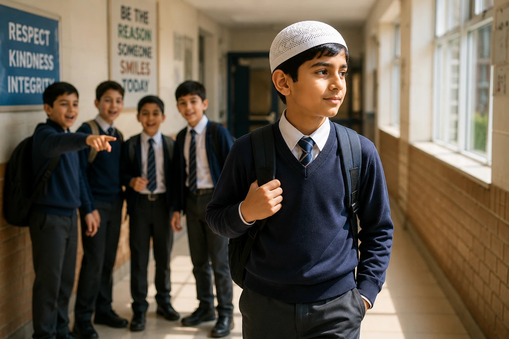

"But Mom, everyone else is doing it!" If you've heard this phrase, your heart probably sank. Peer pressure is one of the most daunting challenges Muslim parents face today. In a world that constantly pushes boundaries, our children are tested daily on their values, their modesty, and their faith. But here is the good news: peer pressure is not a life sentence. With the right tools, rooted in the Quran and Sunnah, we can raise children who don't just resist negative pressure, but who stand firm with unshakeable confidence and Izzah (honor). This comprehensive guide will show you exactly how.
📖 In This Complete Guide, You'll Learn:
- The Islamic perspective on friendship (Suhbah) and its impact on Iman
- Early warning signs that your child is facing negative peer pressure
- How to teach your child to say "No" firmly, politely, and without guilt
- Practical role-playing scenarios to prepare them for real-life situations
- How to create a "judgment-free" zone at home so they always come to you
- What to do if your child has already made a mistake (The power of Tawbah)
🔑 Key Takeaways
- A child's desire to fit in is natural; our job is to redirect it toward fitting in with the right crowd.
- Connection before correction: If they fear your anger, they will hide their struggles from you.
- Teach them that true strength is saying "no" to haram, even when it's difficult.
- Proactively facilitate environments where they can meet righteous, like-minded peers.
- Your reaction to their mistakes will determine whether they come to you next time.

📑 In This Article
- The Islamic Perspective on Friendship (Suhbah)
- Early Warning Signs of Negative Peer Pressure
- Building a Core Identity Rooted in Allah
- Teaching the Art of Saying "No" with Confidence
- Creating a Safe Space for Honest Conversations
- Role-Playing: Preparing Them for Real Life
- Encouraging Positive Friendships
- What to Do If They've Already Made a Mistake
- Frequently Asked Questions
- Final Thoughts
The Islamic Perspective on Friendship (Suhbah)
In Islam, friendship is not a casual concept; it is a spiritual covenant. The people we surround ourselves with directly impact our heart, our habits, and our Hereafter.
The Prophet (PBUH) said: "A person is upon the religion of his close friend, so let one of you look at whom he befriends."
— Sunan At-Tirmidhi 2378, HasanExplain this to your child in simple terms: "Friends are like mirrors. If you stand next to someone who is always complaining, you'll start feeling negative. If you stand next to someone who remembers Allah, you'll feel peaceful." Help them understand that choosing friends is an act of protecting their own Iman.
Early Warning Signs of Negative Peer Pressure
Children rarely announce, "My friends are pressuring me." Instead, they show subtle behavioral shifts. Watch for these red flags:
- Sudden Secrecy: Hiding their phone, being vague about where they are going or who they are with.
- Change in Language or Style: Adopting inappropriate slang, or suddenly demanding clothing that contradicts Islamic modesty because "everyone has it."
- Loss of Interest in Deen: Resisting going to the mosque, complaining about Islamic classes, or mocking religious practices they previously accepted.
- Defensiveness: Overreacting with anger when you casually ask about their friends.
If you notice these, do not panic or immediately accuse. Approach them with curiosity and love, not an interrogation.
Building a Core Identity Rooted in Allah
A child who knows their worth will not beg for acceptance from those who offer it conditionally. The ultimate shield against peer pressure is a strong Islamic identity.
How to Build It:
- Normalize Being Different: Tell them, "We are not meant to follow the crowd; we are meant to follow the Creator of the crowd. Being different is our superpower."
- Highlight Muslim Role Models: Share stories of young Sahaba like Usama bin Zaid (RA), who was given immense responsibility at a young age, or Sumayyah (RA), who stood firm in her faith under extreme pressure.
- Praise Their Islamic Choices: When they choose to pray on time or avoid a haram situation, acknowledge it: "I am so proud of your strength. Allah sees that too."
Teaching the Art of Saying "No" with Confidence
Many kids give in to peer pressure because they don't know how to say no without sounding awkward or losing friends. Give them practical, ready-to-use scripts.
The "Blame the Parents" Exit (Highly Effective for Younger Kids):
"I can't, my parents are super strict about this and they'd ground me for life."
The "Direct but Polite" Boundary:
"No thanks, that's not really my thing."
"I'm good, but you guys have fun."
The "Subject Change" Tactic:
"Nah, I don't do that. Hey, did you see the new Marvel movie?"
Establish a "Code Word" with your child. If they are in an uncomfortable situation and need an immediate exit, they can text you a specific emoji (like 🚨). You will immediately call them and say, "Something came up, I need to pick you up right now," giving them a face-saving way out.
Creating a Safe Space for Honest Conversations
If your child fears your anger, they will hide their mistakes. You must become their safest confidant.
- Listen to Understand, Not to React: When they share something troubling, take a deep breath. Say, "Thank you for telling me. That must have been really hard."
- Avoid Immediate Lectures: Resist the urge to say, "I told you so!" or "Why would you even hang out with them?"
- Ask Guiding Questions: "How did that make you feel?" "What do you think is the right thing to do next time?" Let them arrive at the Islamic conclusion themselves.
Role-Playing: Preparing Them for Real Life
Knowledge is not enough; children need practice. Make role-playing a fun, low-stakes activity at home (e.g., during dinner or car rides).
Scenario 1: The Vape/Cigarette Offer
Parent: "Imagine we're at a party and someone hands you a vape, saying 'Just try it, it's just water vapor, don't be a baby.' What do you say?"
Practice: Let them practice their firm "No, thanks" and walking away.
Scenario 2: The Gossip Session
Parent: "Your friends are making fun of a classmate's hijab. What do you do?"
Practice: Teach them to say, "I don't feel comfortable talking about her like that," and physically stepping away.
Encouraging Positive Friendships
The best way to defeat bad company is to actively cultivate good company. Don't just warn them about bad friends; proactively introduce them to good ones.
- Host at Your Home: Invite their wholesome, Muslim friends over for pizza, board games, or video games. Be the "cool" house.
- Islamic Extracurriculars: Enroll them in Muslim youth groups, Islamic scouting, Quran competitions, or halal sports leagues where the default culture aligns with your values.
- Community Service: Volunteering together at a food bank or mosque event connects them with empathetic, driven peers.
What to Do If They've Already Made a Mistake
If you discover your child has given in to peer pressure (e.g., they lied, tried something haram, or skipped prayer), your reaction in the first 5 minutes is critical.
Do not yell, shame, or label them ("You're a bad Muslim," "I can't trust you"). This pushes them directly into the arms of the very friends who pressured them, because those friends won't judge them.
1. Regulate Yourself: Make wudu and take a breath.
2. Show Mercy: "I love you, and I'm disappointed by the action, but not by you."
3. Refocus on Allah: "Allah is Al-Ghaffar (The Repeatedly Forgiving). Let's make Tawbah together. This mistake does not define you."
4. Problem-Solve: "What can we do differently next time to make sure this doesn't happen again?"
Frequently Asked Questions
🛡️ You Are Their Greatest Ally
Peer pressure is a marathon, not a sprint. Your consistent love, clear boundaries, and unwavering belief in their potential will be the anchor they hold onto when the waves get high. Start today by having one open, judgment-free conversation.
What is your biggest challenge with peer pressure? Share below so we can support each other!
Final Thoughts
Raising a child who can stand firm against peer pressure is one of the greatest acts of Jihad al-Nafs (struggle of the soul) for a parent. It requires patience, wisdom, and immense trust in Allah. Remember, your child's heart is in the hands of Ar-Raqeeb (The Watchful). Make abundant dua for their protection, surround them with love, and equip them with the tools of the Deen. Even if they stumble, your home must always be the place where they can return, repent, and rise again. May Allah make our children leaders of the righteous, who enjoin good and forbid evil. Ameen.